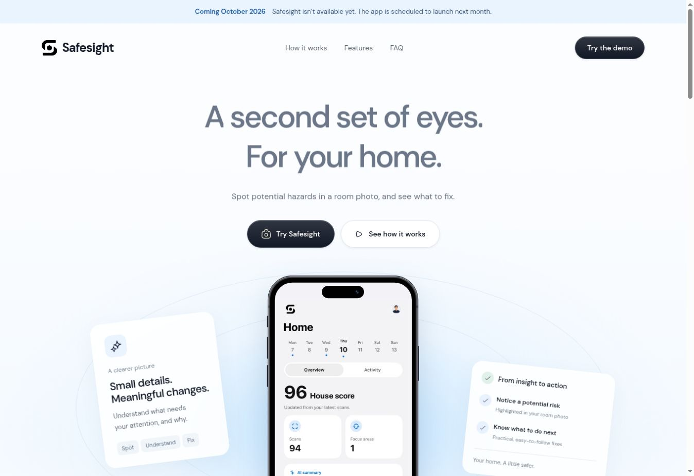

Start with a photo.
Scan a room to look for possible fire, trip, electrical, water, and blocked-exit hazards. The results point out where a potential problem was found.

Website previewA second set of eyes
Scroll to exploreSafesight looks for possible safety hazards in photos of your rooms. It highlights what it finds, explains why it could matter, and suggests steps you can take. The idea is to make it easier to notice the things you might otherwise walk past.
Visit SafesightThe Safesight website introduces the room-scanning app. This preview is a snapshot of the site.

Scan a room to look for possible fire, trip, electrical, water, and blocked-exit hazards. The results point out where a potential problem was found.
Each result includes an explanation and suggested fixes. You can review the finding yourself rather than trying to interpret an unexplained warning.
Scan history, hazard tracking, and the House Score bring the results together. Mark things as fixed or dismissed, then return to your earlier scans.
Safesight is an awareness tool. It helps you know what to check, and doesn’t replace a professional inspection.